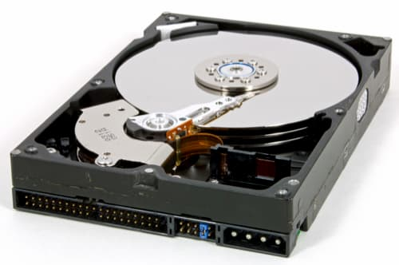

Computer Hardware
Bookmarks
Personal Computers
Audience
This part of the Software Engineering is only for persons who are passionate about computers. If you just want to pass by and study software development you do not actually need this study. But maybe you are like me and you know something about electricity and something about mechanics and something about programming. If you are, then this tutorial is for you, otherwise you can skip to my next tutorial about the databases.
Video Lectures
Next link will open a YouTube playlists, with detailed about PC components and tools required to make or modify a PC. If you watch this series of videos you will learn a great deal from an experienced component builder. This is a series of 18 videos, total watch time is about 5 hours. Take your time and enjoy, you will not be sorry!

Retro PC build
In this series I will explain in details all the steps required to create a computer from A to Z. The first video demonstrate how to put all parts together. Second video show about cable routing and the smoke test. After this course you will be able to appreciate how difficult is to create a computer from parts.
Total watch time ~ 2h
Making a Quiet PC
One of the problems you will encounter using home PC build is the fan noise. Because of fans on CPU and power supply your computer can make a lot of noise and you may want to reduce this noise. This is the main reason you can not keep a server inside your home. A professional server produce hit and makes a laud noise that persist all the time when the server is on. And we know that servers are always on. In this tutorial you will learn what are the options to reduce noise or to make a quiet PC using a special computer case.
Cleaning up your PC
A constant problem that you must be aware of is that desktop PC accumulate dust. So one thing to consider when you build a PC is to select a computer case that have filters. I leave close to main street and my home has a lot of dust. I have put filters into my windows and exhaust fan into the kitchen. This can reduce dust in your home but this is not enough. After one year your computer need to be dusted, otherwise you risk to have malfunctions and overheating. In one of the videos you will learn how to cleanup a computer.
Upgrade & Repair
A personal computer that is build is much more easier to upgrade and repair than a laptop or a MAC computer. This is because you can select your components and you are familiar with them. Some things you can do to upgrade an older PC:
- Add additional memory. It will always improve your PC performance;
- Add secondary hard-disk to improve the storage capacity;
- Change the video-card with a newer model. This can be expensive;
- Replace stock CPU cooler with water-cooling system;
- Make your computer more silent by adding a fan control cable;
- Replace power supply with a large power supply to reduce noise;
Skill Consolidation
Next two video play lists are optional. You will learn diverse options to upgrade an older computer. You can add new HDD, card read unit and additional memory. What else you can do is to add external drivers using enclosures, buttons and intakes to keep you computer cool.
Total watch time ~ 14h
If you have watched this, then for sure you will be able to build your own computer from parts. Next you can go to a job interview and become IT professional. On our store we will have a tutorial that you can purchase for a small price and learn the server side hardware components and design. This course will be available in 2022. You have two years to build your own computer until we make this course.
Permanent Storage
The first storage devices used in computer industry ware optic tapes or perforated cards. Later was invented the floppy disks. These devices are no longer used and are replaced by CD-ROM, DVD-ROM and BD (Blue Ray Disk)
Motivation
An Engineer is not just a regular programmer. It is much more. As software engineer you need a large horizon. When you develop software you must know that it has a purpose. One of the purpose of software can be to store data on disk. Usually the operating system has the capability to do so. But, as and Engineer you must know about it.
Before making any software, you must know what your computer is capable of, so that you can organize data streams to and from the devices you are working with to manipulate your data in workflows. Therefore you must learn this that may be considered by other instructors irrelevant. And do not think for a second that this is not an interesting subject.
Magnetic Tape
Magnetic tapes have been used as external devices from the early days of PC. First tapes use to be like sound tapes or video tapes but a little bit more robust. These tapes are DAT tapes. After this several standards of tape storage have been created to increase the capacity and reliability. DLT Tape
Two base types are most important: DLT (Digital Linear Tape) and SDLT (Super DLT) with several variations of different capacity. Usually the variations are not compatible to each other.
Tapes media is guaranteed to store data for 30 years and have a specific color that indicate the format. For example in the next picture we have Super DLD Type 1 (Dark Green).
There are several companies that produced tapes of different type and capacity specific to a device. So you can’t buy a device from one manufacturer and tape from another. A tape drive is usually using SCSI protocol and is not suitable storage for a desktop computer.
LTO Tape
The latest standard for backup tape is LTO. This standard allow tapes to be interchanged between devices so you can use a Sony tape into a HP device for example.
LTO = Linear Tape Open
The LTO standard has evolved from LTO I to LTO VII. The LTO VI allow a large capacity of 6.25 TB. This tape is for about 25 USD. Today the standard LTO 6 tape has a native capacity of 2.5 TB uncompressed. The LTO 7 magnetic tape has reach capacity of 6 TB uncompressed and 15TB with compression. HP has push the frontier LTO-8 Ultrium to RW standard up to 30TB.
RDX Device
This is not a tape but is a HDD used as a tape to make backups on it. Actually this technology is not so popular due to high price of each casette. But it has an advantage, it has direct access to files, unlike a normal tape that has only sequential access. Also, RDX is very fast and it can use SSD disks.
What is CD DVD and BD?
In next section I will present a series of Compact Disks. This can be confusing if you are not familiar with notation. When you buy you must know what it is right? So I will try to explain some of the notations and what advantages one disk has over another.
DVD+RW
Most common disk is DVD. This can be simple or double layer or double side. There is a difference. Double layer do not have to be turn over to write on it. Double side can be written on both sides but can’t have a label written on any side. That means you must turn over the disk to read the other side. DVD-R can be written once while DVD+RW can be written multiple times. However it need to be erased before you can write on it second time.

>DVD-RAM
Next disc store up to 9.4 GB and can be read and write very fast by using a DVD-RAM capable device. Not all devices know how to handle DVD-RAM standard. This disk is a random access disk and is organized different then the DVD-RW. It can be written multiple times but has random access exactly like a normal hard disk. Is organized in sectors and you can write instantly small number of files at a time.
BD (Blue Ray Disk)
Blue Ray Disk or BD can be a good data storage. Blue Ray starts from 25 GB, 50 GB up to 100GB. You can find internal or external devices for 50$ up to 150$ and you can use these devices to record also DVD if is a combo device. BD is inexpensive and easy to find in bulk. The BD-RE storage is read write storage and can be used for backups. In the picture below you can see a disk box for (BD-R) that is not re-writable but can be burn only once and read multiple times.

M-Disk Verbatim
I think this is kind of magnetic-optic disk. Verbatim M-Disc™ optical media is the new standard for digital archival storage. Unlike traditional optical media, which utilize dyes that can break down over time, data stored on an M-Disc is engraved on a patented inorganic write layer — it will not fade or deteriorate.

Take great care handling a DVD !!! CD, DVD and BD are sensible to light dust and scratches therefore must be enclosed in a box or envelope. Do not put the disk face down on a desk or on paper. Handle the disk careful face down and do not touch with your fingers the active side. After you finish using the disk put it back into the box.
What is SSD?
There is now a new disruptive technology available on the market for storing data. This is called Solid State Disk (SSD) or SSD card accelerator. An SSD is a hard drive that does not have moving parts. Is like a permanent memory storage shaped as a hard drive for convenience. A good SSD is 10 times faster than a normal HDD.

SSD has a lower capacity (128 GB, 256 GB, 500 GB) and is very appreciated as laptop storage or desktop boot drive where you can install the operating system to improve PC performance.
The SSD read and write fast but delete operation is a little bit slower. After multiple read and writes the disk is loosing some of the performance. For this there is a optimization software that can run from time to time to keep performance up.
NVMe SSD
NVMe = Non Volatile Memory Extension
This device is 10 times faster than SSD. For making the operating system load faster, you can use an internal NVMe These are small factor SSD that do not match older laptops or desktops. So be sure your computer supports NVMe before order. For desktop is possible to install an extension card that support NVMe.
External SSD
This SSD can be installed inside a mount/enclosure that can be connected to laptop using an USB cable. Then you use it as external SSD for backup. That is very small and easy to handle and is good for both Laptop or Desktop. With the right cable you can even connect it to your tablet. It is much better than external HDD for backups.
What is ReadyBoost?
You can improve Windows performance using a small SSD as secondary disk. You can use up to 32 GB of SSD disk to be used as cache using windows ReadyBoost technology. For this you select an empty SSD and format as NTFS. Then you use disk/properties/readyBoost to set-up the disk for cache. This may improve performance only if your primary disk is not already SSD.
LINUX BOOT DISK
If you have a small SSD for Linux this is great. You can install / (root) on SSD format using EXT4 and use /noatime option for mounting. Then you have a very fast boot time.
If you have more then one HDD in your computer or you use a RAID array then you can use SSD to store /boot partition (up to 200 ~ 500 mb). This can be formatted EXT3 or EXT4.
Use secondary disk or RAID array to mount / (root) partition. This will allow you to store larger amount of data on the computer or server.
BOOT PARTITION
It is problematic to install boot loader for operating system on a software based RAID. Therefore usually the primary disk on Windows operating system is not RAID based.
On Linux you can have a very small partition for /boot (~ 256 mb < 512 mb) then the root partition "/" can be installed on software RAID array. However if you create a boot partition on one of the RAID disks then this disk will have less space then the other disks. On RAID it is preferred to have the same disk size. The new memory SD card can have a large capacity it is not sensitive to light or mechanical damage if you drop it and can be used to store data for a long time.
What is CF card?
CF is Compact Flash storage used for digital camera. It is less and less used today but is an interesting storage that is sometimes used as boot drive. You can use an IDE or SATA adapter to connect your computer internally to a small flash card and you can install the operating system on this card.

What is a PC card reader?
To read and write card you can you can install a 3.5″ card reader instead of a floppy disk. This is the new standard for a modern PC movable media and the floppy disk or any mechanical device. The new SD card can have a large capacity it is not sensitive to light or mechanical damage if you drop it and can be used to store data for a long time.

Memory Stick
Is a very popular device used by millions for storing of-line files and transport. There is a problem. These devices are growing in size every year and is so easy to loose. Therefore if you have a memory stick, take great care not to loose it on the street. Your data could be compromised.

Performance Computing
Higher Performance Computing (HPC) ia a technology to build computers with higher computation power and improved storage performance. These are used for computing intensive jobs like DML (Deep Machine Learning) and encryption. This kind of hardware is more for enterprise computing or high end game development PC or AI research.
What is RAM ?
RAM = Random Access Memory. But this is old news. What is new is the capacity and frequency of new RAM chips. A computer can have 4GB RAM minimum but more common 8GB RAM. A HPC require larger capacity: 2x16 = 32GB or up to 4x32 = 128GB is possible for a high end HPC.
Corsair DDR4 - RAM
What is CPU ?
Central Processing Unit = CPU. I will not argue for AMD or Intel brand. What is important then? Compare clock speeds only when you are trying to decide between two CPUs from the same family and same number of cores. There are benchmarks that can check Single-Threaded Performance. This is the most important. Then there is the number of cores and the cache memory.
The more expensive the Chip the more power it has. Logic, but only if the chips are from the same brand. This criteria not work between different brands. Intel has fallen a little bit behind in so far (2020) but will recover in 2021. NVIDIA is making ARM CPU processors for MAC and Servers that have a different architecture. This is cool, but you can not build your own MAC so we do not talk about it in our course.
AMD vs Intel
What is FPGA ?
- Intel has acquire Altera in December 2015.
- AMD has acquire Xlinx in Oct. 27, 2020
- Nvidia already has GPU Titan RTX.
Experimental
Below is an affordable FPGA solution. This little stick is not a memory stick but an AI accelerator for Neural network deep learning programming. You can use a USB hub to connect multiple such sticks. They work together.
Enterprise
Below is a eFPGA high end, enterprise class programable accelerator card. As you can see below the FPGA is a big player in HPC domain. We have not yet experimented with this type hardware due to extreme cost. Next card is about $5000 on Amazon. Do not buy!
What is GPU ?
Graphic Processor Unit = GPU. This is an acceleration card for gaming PCs. But you can also do cool applications for GPU using special libraries. This enable DML (Deep Machine Learning) algorithms to run especially for Nvidia GPUs. AMD and Nvidia this time are competing against each other in this market. Intel does not make video cards for HPC.
Titan RDX - GPU Video Card
Titan RDX - GPU Video Ports
What is AIC ?
AIC = Add-in Card. This is a new kind of storage that is Non Volatile Memory Express (NVMe). It is based on MLC (Multi Level Cell) like SSD except that is much faster then a normal SSD. In next picture you can see the brand: "Intel Optane SSD AIC Internal Solid State Drive (SSD)". Also Western Digital makes a similar card called "WD Black AIC 1TB PCI-Express".
Performance: This memory card is very fast and you can install the operating system on it or you can use this as an accelerator card for a very fast database. It can have 400GB or 800GB or even 1.2 TB and have price between $350 and $850 depending on the model. When you buy one of this make sure your motherboard supports it. You need at least a PCI express x4 free slot. If you have PCI express x8 OR PCI express x16 this will also work.
What is a HDD?
The most successfully storage device and the most popular is today the hard drive (HDD). This device is an internal small box that contains mechanical and electronic parts that are used for storing large amount of data. These devices are very successful due to rapid access to read or write information. These devices are designed for desktop PC, Servers or Laptops. There are 2 standard sizes: 3.5″ and 2.5″. In the next picture you can study the internal components of a HDD but the real HDD is encapsulated in a case, for protection. You can not look inside the case without a screw driver.

Technology: these devices are using one or several disk platters that are mounted on a spindle. The patters are easy to magnetize and demagnetize using a small coil mounted on a moving head that is reading or writing data. Some HDD are using a single disk some other are using one 2 or 3 platters on the same axis but new disks can have upt to 8 platters to increase the capacity.
Performance: Depending on the number of disks mounted on the spindle and depending on the rotation speed, the HDD can be faster or slower. The spinning is measured in RPM (rotation per minute). For example a 15000 RPM or 10.000 RPM is used for fast responsive server side HDD while 7500 RPM is used for desktop computer while 5000 RPM disks are used for laptop computers.
Capacity: The capacity of HDD is measured in GB (GigaByte) or TB (TeraByte). 1 TB = 1000 GB. One Byte = 8 Bit.Usually a laptop is using a single HDD of small capacity (GB) while desktop or servers can use 2 or more HDD of large capacity (TB).
Because HDD has moving parts it generate heat, vibrations and is subject to mechanical and thermal degradation. Today you can find HDD of large capacity up to 10 TB for servers using SATA or SAS interface or for NAS storage.
High capacity RAID
Backup on RAID
A backup disk must be a single disk on Windows. Sometimes you can use 2 independent disks for alternative backups. For windows NT you can specify several disks for backup that are automatically used by the system and do not have assigned a letter like the other disks. We do not recommend RAID array for desktop computers but only for servers or workstations. One large HDD can be superior to a bad RAID array.
RAID Inconvenience
- For RAID you use several disks that can make computer more heavy;
- You need a computer case with 4 or more HDD locations to create a RAID;
- RAID consume more power then a single disk in a computer;
- You should not use SSD for any RAID other then RAID0.
There are 2 ways to create a RAID array:
Software RAID and hardware RAID. For hardware RAID you need a specific card that is to control several disks. New PC motherboards have support for RAID using SATA controller. Software RAID is available as a feature of the operating system. RAID Parameters
There are 2 important parameters you have to consider when you decide what kind of RAID to create:
- RAID LEVEL
- CHUNK SIZE
CHUNK SIZE
To get good performance you must have a reasonable chunk size specific to your work or job.
For video editing: You want a lot of bandwidth, so you want a small chunk size. Anywhere from 512 bytes (one block) to 8 KB is a small chunk size. This will allow multiple disks to contribute to data stream at once increasing the data bandwidth.
For a database: You want to maximize your IOPS, which ideally means sending each I/O to only one disk. So you want a large chunk size – at least 64 KB or more. That large chunk will mean that most I/Os get serviced by a single disk and more I/Os are available on the remaining disks.
RAID LEVELS
RAID capacity, performance and reliability are in balance. Depending on your goal one kind of RAID is better then another. Here are the most important RAID flavors:
JBOD: Just a bunch of disks. is known as "spanned volume" on Windows. It is the best choice for a desktop PC. It increase the size of the volume and keep the performance at maximum. This is the most suitable RAID for a beginner who has too many disks in his computer.
RAID-0: Known as "striped volume" on Windows. RAID-0 is good for speed, you can use two or more hard drives.The storage capacity grow linear with the number of drives. On Linux RAID-0 can be created using MD-RAID, LVM or BtrFS.

The major limitation of RAID-0 compared to other RAID levels is that does not offer any redundancy. RAID-0 can be used to increase storage capacity, sequential read and sequential write.
RAID-1: Known as "mirrored volume" for Windows, RAID-1 is good for data safety and it increase the reading speed but you can use only 2 hard drives. RAID-1 offer 100% redundancy but will not increase your writing speed or disk space.
This is available only on Windows professional edition and Windows server edition. It is not available on Windows home edition.
Note: RAID chunk size do not have effect on performance for RAID 1.
RAID-5: is using 3 or more hard drives and has a special algorithm to distribute data across these disks. If one of the disk fail it can be replaced and array is rebuild by the system. The tricky part is to know which hard disk has failed. If you replace the wrong hard drive you will probably loose all the data.
RAID 6: is using 4 or more hard drives and is using double redundancy. So if any disk fail you can replace the disk but if you replace the wrong disk data is not lost. This RAID is using some more processing power to write and read from the HDD due to redundancy algorithm. This is the most used RAID in enterprise class NAS or server storage.
RAID-10 A server need minimum 4 disks to create RAID-10. The speed for write will be up to 2x faster then a single disk while the speed for reading is 4x faster. RAID-10 can use 4, 6 or 8 HDD for storing videos and pictures. RAID-10 is not good for servers.
Raid combination
Enterprise servers are using RAID-6, however combinations of RAID-6 and STRIP can create larger had drive arrays that are faster than RAID-6 by using RAID-60. You can find schema for different kind of combinations on the interned. Important to know is that it can be done.
Spare disks
Some RAID arrays have support for one or more spare disks. These disks do not have data but they are in reserve. If one of disks fail, the RAID is able to repair itself, disabling the defect disk automatically and rebuilding the array on the fly. This is a professional solution and is used frequent on critical servers.
Personal computer RAID
Personal computer sometimes enable RAID but most of the time a desktop computer has one single hard disk. If you use two disks then one is for operating system one is for backup. If you have 4 disks then you can use different size disks or same size disks.
First disk is for Windows System, and it can be SSD. Second disk is of large capacity and is for Backup. Disks 3 & 4 can be same size and connected in RAID-1. Do not ever use RAID-0 on a PC it is dangerous to loose data. The RAID 0 can break easy on a desktop computer if you sue SATA disks. On server there is a different class of hard-disks: Enterprise Class, made express for RAID. If you purchase this kind of disks you can have RAID at home.
NAS Storage
A NAS storage is an external box having several HDD installed in RAID. It is in fact a computer that is dedicated for large storage capacity. It can connect using a e-sata cable (external SATA) or fiber optics. In the next picture you can see an example of NAS storage. Feel free to investigate careful for your NAS or external drive solution before you buy. This is not for everyone but it can be useful for a small office to make backups on it or to store a large database.

Server / NAS RAID storage
RAID is usually required for servers. In the picture below we show you a RAC with several disks that are mounted. Each disk can be extracted easy without any tool. The drivers are installed in special drawers that have ventilation and a special handle that will disconnect the diver and then you can pull the driver out while the server is running.
Of course you must have a good reason to pull out a disk or an entire array. Usually a defect disk has a red light that indicate is defect and must be changed. If does not then you can measure temperature of disk and if one gets hot then it must be changed. Of course this id difficult if the drawer do not have a thermometer on it.
Read next: Crafting Compilers